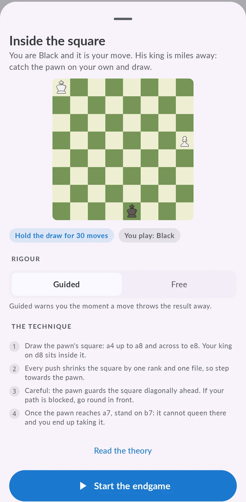

Finales de ajedrez que hay que saber: los 100 básicos y cómo practicarlos
Saber que la posición de Lucena gana y la de Philidor hace tablas es una cosa. Conseguirlo contra alguien que defiende a la perfección es otra. Aquí tienes la lista, familia por familia, y la forma en que Chess Coach te deja jugar cada uno contra un motor que no se despista.

Por dónde empezar
Empieza por los finales de rey y peones. Todos los demás acaban convirtiéndose en uno, y las tres ideas que enseñan deciden la mayoría: la oposición, la regla del cuadrado y las casillas críticas delante del peón.
Después ve a los finales de torre. Son los que más te vas a encontrar en tus propias partidas, y por eso ocupan 42 de los 100 puestos: las posiciones de Lucena y Philidor, cortar al rey, la defensa por el lado corto y la defensa Vancura.
Los finales de alfil, dama y caballo van al final. Algunos hay que ganarlos, y muchos consisten en saber qué posiciones son tablas y aguantarlas.
Los 100 finales, por familias
«Gana» quiere decir que juegas por el punto entero. «Aguanta» quiere decir que la posición es tablas con la defensa correcta, y el trabajo es demostrarlo.
Rey y peones 20
- Fuera del cuadradoGana
- Oposición y victoriaGana
- Zugzwang y victoriaGana
- El rey por delante del peónGana
- Oposición lejanaGana
- Dentro del cuadradoAguanta
- Oposición y tablasAguanta
- Zugzwang y tablasAguanta
- El peón de torre no ganaAguanta
- Crear el pasado protegidoGana
- Peones dobladosGana
- Las casillas críticasGana
- Entregar el peón pasadoGana
- La triangulaciónGana
- El peón pasado alejadoGana
- Los tiempos de reservaGana
- El peón trabado, ganandoGana
- Pasados en las dos alasGana
- El cuadrado erranteAguanta
- El peón trabado, aguantandoAguanta
Finales de torre 42
- Mate con torreGana
- Mate de la escaleraGana
- Posición de LucenaGana
- Sacar al rey de a8Gana
- La torre detrás del peónGana
- La torre caza al peónGana
- Torre contra dos peones ligadosGana
- Cortar por la filaGana
- La posición PhilidorGana
- El rey por delante del peónGana
- El corte horizontalGana
- El rey cortado en octavaGana
- Peón de alfil en quintaGana
- Ganar un tiempo con jaqueGana
- La torre delante del peónGana
- La marcha en diagonalGana
- Ganar un tiempoGana
- El rodeoGana
- El empuje desde atrásGana
- La posición límiteGana
- Detrás del más adelantadoGana
- El estudio del peón de caballoGana
- El rey al lado de los peonesGana
- Posición de PhilidorAguanta
- Defensa por el lado cortoAguanta
- Defensa VancuraAguanta
- Rey cortado por la torreAguanta
- El peón de h4 da jaqueAguanta
- La defensa de CochraneAguanta
- La defensa de la segunda filaAguanta
- Peón de torre en quinta contra alfilAguanta
- Peones doblados en el centroAguanta
- Peones doblados de caballoAguanta
- El sistema defensivoAguanta
- Peones ligados bloqueadosAguanta
- Torre atascada delante del peónAguanta
- Vancura contra dos peonesAguanta
- Defensa de la última filaAguanta
- El corte verticalAguanta
- El corte imperfectoAguanta
- Un tiempo de menosAguanta
- El gancho de colaAguanta
Finales de dama 9
- Mate con damaGana
- Dama contra peón en séptimaGana
- Peón de torre: la zona ganadoraGana
- Peón de alfil: la zona ganadoraGana
- Romper la fortalezaGana
- Peón de alfil: corona y cambiaAguanta
- Peón de torre: corona con jaqueAguanta
- La fortaleza de torre y peónAguanta
- La celada del peón de alfilAguanta
Finales de alfil 23
- Mate con los dos alfilesGana
- Mate de alfil y caballoGana
- Peón de torre, alfil buenoGana
- Expulsar al alfil de sus diagonalesGana
- La diagonal cortaGana
- El bloqueo del caballo se rompeGana
- Peones ligados en la sextaGana
- El cajón de peonesGana
- El método de las dos columnasGana
- El peón de caballo, retrasadoGana
- El rodeo por la bandaGana
- Peón de torre, alfil maloAguanta
- La oposición por detrásAguanta
- Diagonal de tres casillasAguanta
- Entrar por la diagonal largaAguanta
- El sacrificio de alfilAguanta
- El bloqueo del caballo aguantaAguanta
- La posición defensiva correctaAguanta
- Peones separados por una columnaAguanta
- La fortaleza contra el peón de caballoAguanta
- Peón de torre y central: el frente estrechoAguanta
- El peón de caballo, demasiado adelantadoAguanta
- Peones controlados en una misma diagonalAguanta
Finales de caballo 6
- El peón de caballo coronaGana
- Rey y caballo sí dan mateGana
- El caballo delante del peónAguanta
- Controlar el peón de ladoAguanta
- El circuito bueno del caballoAguanta
- La barrera del caballoAguanta
Cómo practicarlos en Chess Coach
- Elige un final. Las familias van de más fácil a más difícil, y tu progreso se guarda en cada una.
- Lee el objetivo y la técnica. Cada final te dice si hay que ganar o aguantar, y explica el método en unos pocos pasos cortos.
- Juégalo contra el motor a plena fuerza. Cada posición está comprobada con las tablas de finales, así que el resultado que se ofrece es el real.
- Elige guiado o libre. En modo guiado la app te avisa en cuanto una jugada tira el resultado; en modo libre te enteras al final.
- Después, practica. Cuando ya conoces la técnica, el modo práctica te da una posición nueva cada vez, sacada de más de 45.000 posiciones de partidas reales.

Qué es gratis
La familia de rey y peones está abierta a todo el mundo: seis finales para aprender la técnica (el cuadrado, la oposición y el zugzwang, cada uno para ganar y para aguantar) y posiciones de práctica sin límite. El resto de familias forman parte de Premium.
Preguntas
¿Qué finales de ajedrez hay que aprender primero?
¿Cuántos finales hace falta saber de verdad?
¿Puedo practicar finales contra el ordenador gratis?
¿Funciona en iPhone y en Android?
Sigue entrenando
Llévate el coach contigo
Empieza gratis en iPhone, iPad o Android. Sin anuncios, y sin suscripción para jugar, analizar o hacer el primer curso.
Inicia sesión y tus partidas, ratings y progreso te siguen al otro dispositivo.

La portada, en un iPhone. La misma app en Android y en iPad.